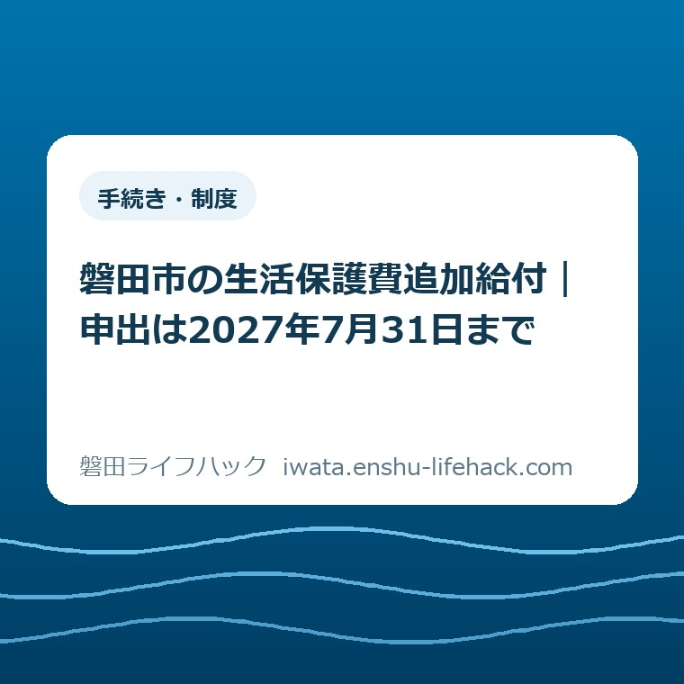

手続き・制度
磐田市の生活保護費追加給付｜申出は2027年7月31日まで

この記事の要点
Q. 過去に磐田市で生活保護を受けていました。追加給付の対象なら、何から始めればよいですか？
A. 2013年8月〜2018年9月に磐田市で生活保護を受けた全世帯と、2018年10月〜2026年3月の一部世帯が対象です。現在受給していない方は2027年7月31日までに申出が必要です。戸籍謄本を取る前に専用電話0538-30-7770へ確認し、個別条件と金額は市の案内で確かめてください。
導入——書類より先に、電話一本でよい
磐田市の生活保護費追加給付で、過去の受給者が今日することは、戸籍謄本を取りに行くことではありません。受給していたおおよその時期を手元に置き、市の専用電話へ確認することです。
生活保護を受けていた間、世帯の方は収入、資産、家族関係、住まいについて、すでに何度も確認へ応じています。年月がたってから当時の住所や世帯員を思い出し、もう一度書類をそろえるのは軽い手間ではありません。
追加給付の対象や金額は、受給した時期、当時の世帯構成、算定されていた加算で変わります。制度の説明を読んだだけで、自分は確実に対象だ、対象外だ、と決めないでください。
私の結論は明確です。書類代と二度手間を先に払わない。2027年7月31日の期限をカレンダーへ入れ、まず電話一本で入口を確かめます。
事実整理——2025年6月27日の最高裁判決が出発点
磐田市の「最高裁判決を踏まえた生活保護費の追加給付」は、2013年の生活扶助基準改定と、2025年6月27日の最高裁判決を受けた手続きです。
磐田市の説明では、国が新たな水準を設定し、当時の水準との差額に相当する金額を追加給付する方針を決めました。磐田市も国が示す基準に基づいて、該当する受給者へ追加給付を行います。
追加給付は、全員へ同じ額を配る新しい月額給付ではありません。過去の受給期間と当時の算定内容を確認し、世帯ごとに金額を計算するものです。
市公式ページの更新日は2026年8月25日です。本記事は2026年9月7日に同ページを確認し、和暦を西暦へ置き換えて手順を整理しています。
生活保護そのものの概要は、磐田市の「生活保護」ページで確認できます。追加給付の対象判定は一般的な生活保護の相談と分け、専用電話へ尋ねるのが市の案内です。

対象期間は二つあり、後半は全世帯ではない
2013年8月から2018年9月までに生活保護を受けたことがある全世帯は、磐田市が示す追加給付の対象範囲です。
2018年10月から2026年3月までに受給した世帯は、全世帯が対象ではありません。一定期間入院または入所していた方、障害に関する加算が算定された方、毎年12月の期末一時扶助費が算定された世帯などが例示されています。
市公式ページの例示は「など」で終わっており、後半期間の条件を全部並べた一覧ではありません。例に自分の状況がないことだけを理由に、対象外とは判断できません。
現在は生活保護を受けていない世帯も、対象期間と条件に当てはまれば追加給付を受けられる場合があります。過去の受給者も対象になり得ることが、今回の意外な事実です。
亡くなった方本人は追加給付の対象になりません。ただし、受給当時の世帯主が亡くなっていても、当時の世帯員が存命なら、定められた順位に沿って申出できる場合があります。
市が示す申出順位は、配偶者、子、父母、孫、祖父母、兄弟姉妹、曽孫、甥または姪の順です。事実婚の配偶者も含むと説明されていますが、家族関係の個別確認は市へ任せます。
磐田市以外でも生活保護を受けていた期間がある方は、受給していた自治体ごとに申出が必要です。磐田市へ一度出せば、別の自治体分まで自動で処理されるわけではありません。
受給歴が複数あり、記憶が途切れていても申出はできます。分かる範囲で書き、市が保有する情報やデータで確認できれば、それに基づいて金額を計算すると案内されています。
申出期間は2026年8月1日から2027年7月31日まで
過去に磐田市で生活保護を受け、現在は受給していない方の申出期間は、2026年8月1日から2027年7月31日までです。
現在も磐田市で生活保護を受けている世帯は、申出不要とされています。通常の生活保護費の支給日と合わせて、追加給付を行う案内です。
現在受給中の世帯について、市公式ページには振込時期を「2026年7月末の予定」とする記載が残っています。2026年9月7日時点で実際の振込完了は確認できないため、未入金や金額の疑問は担当者へ確認してください。
現在受給していない世帯は、原則として受給当時の世帯主から申出ます。元世帯主が亡くなっている場合は、申出順位と必要な関係書類を電話で確認します。
2027年7月31日は申出の締切日であり、振込日ではありません。元受給者の審査期間や振込までの日数は、市公式ページに示されていません。
期限まで約11か月ある2026年9月7日の段階でも、後回しにする理由はありません。当時の家族関係を確認する必要がある世帯ほど、対象確認だけは早めに済ませた方が段取りを組みやすくなります。
申出方法——専用電話で対象確認を先にする
磐田市福祉相談課の追加給付担当は、電話0538-30-7770です。受付時間は平日の午前8時30分から午後5時15分までです。
電話では、氏名、受給していたおおよその時期、当時の住所、当時の世帯主と世帯員、現在の連絡先を伝えられるようにします。全部を正確に覚えていなくても、分かる範囲を整理して話します。
磐田市は、紙の申出書と同意書をウェブ上に掲載していません。電話後、市が世帯構成や加算の有無などを確認し、手続きの案内と様式を郵送します。
様式を公開していないのは不便にも見えますが、市は理由も示しています。戸籍謄本の取得には費用がかかるため、先に対象の可能性を確かめ、不要な書類取得を減らすためです。
当時の受給期間や住所を正確に覚えていない方も、分かる範囲で申出書を出せます。窓口で対面の本人確認ができれば、保護受給歴を案内できる場合もあると市は説明しています。
提出先の福祉相談課生活支援グループは、磐田市国府台57番地7のiプラザ3階です。紙の申出書は窓口へ持参するほか、郵送でも提出できます。
必要書類は、市の確認後に集める
紙で申出る場合の必須書類は、市から届く申出書と同意書、当時の世帯主と全世帯員分の戸籍謄本、本人確認書類の写し、申出者本人名義の口座が分かる写しです。
戸籍謄本は発行から3か月以内のものが求められます。外国人の方は、戸籍謄本の代わりに全世帯員の住民票の写しが必要です。
当時に各種加算を受けていた方は、加算に応じた書類も必要になる場合があります。どの書類が自分に必要かは、加算の種類と市が確認できる記録によって変わります。
加算を裏付ける書類が手元になくても、申出そのものは可能です。ただし、市側でも確認できないときは、加算分を追加給付へ反映できない場合があります。
戸籍謄本には発行手数料がかかり、別の市区町村へ請求するなら郵送費や時間も生じます。市が電話確認を先に置いた理由を、家計と段取りの側から受け止める必要があります。
追加給付額は一律ではありません。当時の世帯構成、受給期間、算定された加算で変わり、給付額が発生しない場合や少額になる場合もあります。
正確な金額は、申出書などを受けた磐田市が計算し、決定通知書で知らせます。個別の計算式、目安額、最低額、最高額は市公式ページに掲載されていません。
元受給者について、提出から決定や振込まで何日かかるかも公表されていません。家計の予定へ入れるのは、決定通知を受けて金額と時期を確認してからにします。

電子申請は、マイナンバーカードと対応スマートフォンが必要
磐田市の生活保護費追加給付は、有効な署名用電子証明書が入ったマイナンバーカードを持つ方なら、マイナポータルのぴったりサービスから電子申請できます。
電子申請には、マイナンバーカード、対応するスマートフォン、署名用電子証明書の英数字6〜16文字の暗証番号、振込口座を確認できる通帳などが必要です。
氏名、住所、生年月日、性別はカード読取りで自動入力できます。添付書類はスマートフォンで撮影して登録し、電子署名後に申請データを送ります。
送信後の審査完了、不備訂正の必要といった受付状況は、マイナポータル上で確認します。送った画面と受付状況を家族で共有できるよう、日付も記録します。
代理人による紙の申出は認められる場合がありますが、代理申出や世帯主死亡時に電子申請を使える範囲は、市公式ページだけでは判断できません。専用電話で入口を確認します。
電子申請は移動を減らせます。暗証番号が不明、カードの電子証明書が失効、添付関係が複雑という場合は、郵送またはiプラザの窓口を選ぶ方が早いこともあります。
評価——良い点は、元受給者の手間を具体的に減らしていること
良い点の一つ目は、現在は生活保護を受けていない方も対象になり得る、と市が冒頭で明記したことです。古い受給歴を持つ方が自分に関係ないと読み飛ばすのを防げます。
良い点の二つ目は、書類を取る前の電話確認を案内し、その理由まで書いたことです。戸籍謄本の費用が無駄になる可能性を先に示した案内は、制度を家計の言葉へ下ろしています。
良い点の三つ目は、専用電話、紙の郵送・窓口、電子申請の入口を用意したことです。暗証番号や口座番号を電話で聞かないという詐欺への注意も、同じページで確認できます。
注文したい点——現在地と所要日数をもう一段はっきりさせてほしい
注文したい点の一つ目は、現在受給中の世帯への振込状況です。2026年8月25日更新のページに「2026年7月末の予定」という表現が残り、2026年9月7日に読む人は完了済みか確認できません。
注文したい点の二つ目は、元受給者の申出後にかかる期間です。審査の標準的な日数や、受付件数が増えた場合の見通しが一行あるだけで、給付を家計へ入れてよい時期を判断しやすくなります。
注文したい点の三つ目は、最初の電話で伝える項目の短い一覧です。受給時期、旧住所、世帯主、現在の連絡先だけでも先に示せば、電話の途中で古い書類を探す負担を減らせます。
福祉相談課の担当者個人を責めたいのではありません。古い記録と家族関係を照合する仕組みだからこそ、申出者が待つ時間と、次にすることを画面で見える形にしてほしいという、一事業者からの要望です。
追加給付を待つ話と、今日の生活費の相談は分ける
生活保護費追加給付は、過去の受給内容を確認して金額を決める手続きです。2026年9月7日の生活費が足りない方へ、申出直後に現金が届く仕組みとは案内されていません。
食費、家賃、光熱費の支払いが迫っている方は、追加給付の審査だけを待たず、生活費に困ったときの相談先から現在の状況を伝える窓口を確認してください。
住まいの支出を見直す必要がある方は、磐田市営住宅の募集状況を整理した記事で、定期募集と通年受付を分けて確認できます。
入居先を急いで探す事情がある場合は、住まいに困ったときの相談も併せて使います。追加給付の対象確認と、今日の住まいの確保は別々に動かします。
生活保護の開始や廃止に伴う国保資格の動きが気になる方は、磐田市の国保加入者数を整理した記事へ進めます。国保の資格と、過去の追加給付は別の確認です。
詐欺を避ける基準は、電話で聞かれない情報を知ること
磐田市と厚生労働省は、追加給付について電話で暗証番号や口座番号を聞かないと明記しています。ATMの操作や振込手数料の振込みも求めません。
不審な電話を受けたら、相手が告げた番号へ折り返さないでください。自分で磐田市公式ページを開き、掲載された専用電話0538-30-7770へかけ直します。
家族が申出を手伝う場合は、公式ページのURL、電話した日、担当窓口、次に必要と言われた書類を一枚へ記録します。申出権者本人名義の口座しか使えない点も共有します。
対案・結論——今日の一歩は、受給時期を一行書いて電話する
磐田市の元受給者が2026年9月7日に進める一歩は、「何年ごろ、どの住所で受給していたか」を一行だけメモすることです。
メモができたら、平日の午前8時30分から午後5時15分に、追加給付担当0538-30-7770へ電話します。対象の可能性と、誰が申出者になるかを確認します。
市の案内を受けた後で、戸籍謄本、本人確認書類、口座の写し、必要な加算関係書類を集めます。先に全部そろえようとしないのが、無駄を減らす順番です。
紙なら郵送またはiプラザ3階の窓口、条件が合えばマイナポータルから電子申請します。提出日と受付状況を残し、決定通知書が届くまで個別額を家計へ入れません。
- 受給したおおよその時期、旧住所、当時の世帯主を一行にする
- 磐田市の専用電話0538-30-7770へ対象と申出者を確認する
- 市が案内した書類だけを集め、2027年7月31日までに申出る
- 提出日、受付状況、決定通知書を同じ場所へ保管する
大石の視点——すでに払った手間を、もう一度軽く見ない
大石浩之（磐田市／不動産業）として、ここからは公表情報ではなく私の意見を書きます。このテーマに使える個別の体験ストックはありません。
窓口で誰かに言われた話や、過去の受給者から相談を受けた実話は作りません。制度の案内を、家計と家族の段取りへ置き換える立場から考えます。
生活保護を受けていた方は、当時すでに多くの事情を説明し、必要な書類を出しています。何年もたってから再び古い住所と家族関係をたどる負担を、「申出ればよい」の一言で済ませてはいけません。
私の言い切りは、戸籍謄本を取る前に電話する、です。制度として必要な書類でも、対象確認より先に取れば、手数料、移動、郵送、家族への連絡が無駄になる場合があります。
私は今回、給付の理念よりも、家計と段取りの実利で考えます。誰がいつ電話し、どの費用を先に払わないかを優先しています。
私にも迷いがあります。電話を先に勧めると、つながりにくい時間帯に何度もかける負担を増やすかもしれません。それでも、対象が分からないまま戸籍を集めるより、専用回線で入口を確認する方が損を小さくできます。
制度は個別条件で変わります。この記事を対象判定の代わりにはせず、最後は磐田市公式ページと福祉相談課の追加給付担当で確認してください。
FAQ——生活保護費追加給付で聞かれやすい3問
磐田市の生活保護費追加給付について、元受給者が最初に迷いやすい対象、金額、入口を三つに絞ります。
過去に磐田市で生活保護を受けていた人は、追加給付の対象ですか。
2013年8月から2018年9月までに受給した全世帯と、2018年10月から2026年3月までに受給した世帯のうち一定の条件に当てはまる世帯が対象です。現在受給していない方も対象になり得ます。受給時期が曖昧でも、磐田市の専用電話0538-30-7770へ確認してください。
磐田市の生活保護費追加給付はいくらですか。
一律額ではありません。当時の世帯構成、受給期間、算定された加算などで変わり、給付額が発生しない場合や少額になる場合もあります。正確な金額は申出後に磐田市が計算し、決定通知書で知らせます。個別額は申出前に断定できません。
追加給付の申出で最初にすることは何ですか。
戸籍謄本を取る前に、磐田市福祉相談課の追加給付担当0538-30-7770へ電話してください。受付は平日8時30分から17時15分です。市が対象となる可能性を確認してから申出書などを案内します。申出期限は2027年7月31日です。
最後に確認すること
対象期間の前半は2013年8月から2018年9月までで全世帯、後半は2018年10月から2026年3月までで一定条件の世帯です。
現在受給中の世帯は申出不要です。現在受給していない対象者は、2027年7月31日までに磐田市へ申出ます。
金額と必要書類は個別に変わります。まず専用電話へ確認し、市の案内後に書類を集める順番を守ります。
- 元受給者も対象になり得るため、受給時期が曖昧でも市へ確認する
- 申出期間は2026年8月1日から2027年7月31日まで
- 追加給付額は一律ではなく、申出後に市が計算する
- 戸籍謄本を取る前に、専用電話0538-30-7770へ連絡する
参考にした公式情報
- 最高裁判決を踏まえた生活保護費の追加給付／磐田市（2026年9月7日確認・ページ更新日2026年8月25日）
- 生活保護／磐田市（2026年9月7日確認・ページ更新日2024年4月10日）
- 生活にお困りの方／磐田市（2026年9月7日確認）

最終確認日：2026-09-07 ／ 本記事は公表情報と執筆者の見解を分けて記載しています。制度・数値・公開状況は変更される場合があるため、最新情報は磐田市公式ページでご確認ください。